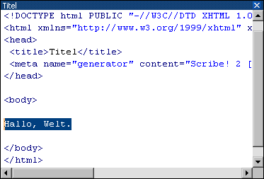

D e r E d i t o r
Textfeld

Das Textfeld dient der Bearbeitung beliebiger (X)HTML - Dokumente sowie anderer Textdateien.| Beschreibung: | Der Tag, in dem sich der Cursor befindet, kann über das jeweilige Dialogfenster nachbearbeitet werden. |
| Shortcut: | Strg+F3 |
| Beschreibung: | Der Tag, in dem sich der Cursor befindet, und sein Endtag werden gelöscht. Dabei spielt es keine Rolle, ob nun der Tag oder der Endtag angeklickt wurde. |
| Shortcut: | Strg+Entf |
| Beschreibung: | Cascading Style-Sheet - Befehle werden an das Ende des aktiven Tags angehängt. |
| Beschreibung: | JavaScript-Ereignisse werden an das Ende des aktiven Tags angehängt. |
| Beschreibung: | Zum aktiven Tag wird das betreffende Hilfe - Dokument aufgerufen. |
| Shortcut: | F1 |
| Beschreibung: | Schneidet den markierten Text aus und kopiert ihn in die Zwischenablage. |
| Shortcut: | Strg+X |
| Beschreibung: | Kopiert den markierten Text in die Zwischenablage. |
| Shortcut: | Strg+C |
| Beschreibung: | Fügt einen Text aus der Zwischenablage ein. |
| Shortcut: | Strg+V |
| Beschreibung: | Löscht den markierten Text. |
| Beschreibung: | » Verschiedene Funktionen, die den markierten Text betreffen. |
| Beschreibung: | Schließt das aktuelle Dokument. |
| Shortcuts im Textfeld | |
| Strg+Enter | Fügt <br /> ein. |
| Shift+Enter | Fügt <p> und </p> ein. |
| Strg+Leertaste | Fügt ein. |
| Strg+" | Fügt " ein. |
| Strg+< | Fügt < ein. |
| Strg+> | Fügt > ein. |